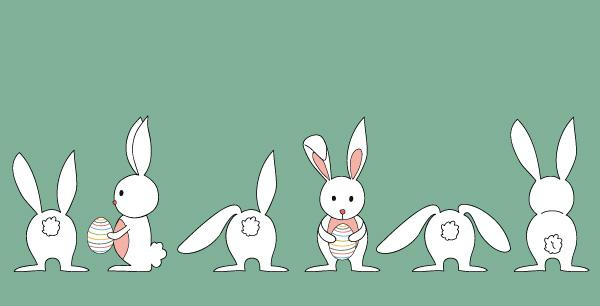

<!DOCTYPE html>
<html lang="en">

<head>
    <meta charset="UTF-8">
    <meta name="viewport" content="width=device-width, initial-scale=1.0">
    <title>Document</title>
    <style>
        .marquee {
            overflow: hidden;
        }
        
        .content {
            display: flex;
            flex-direction: row;
        }
        
        .list {
            /* overflow: hidden; */
            display: flex;
        }
    </style>
</head>

<body>
    <!-- 这个标签可实现 从右往左不断循环滚动 -->
    <!-- <marquee behavior="" direction=""></marquee> -->
    <div class="marquee">
        <div class="content">
            <div class="list"></div>
            <div class="list"></div>
            <div class="list"></div>
        </div>
    </div>
</body>

<script src="https://ajax.aspnetcdn.com/ajax/jquery/jquery-1.9.0.min.js"></script>
<script>
    // jq 挂载
    $(() => {
        console.log('页面元素加载完成后执行这里面的内容')
            // 使用jq 选择需要的元素
        var outerWidth = 600,
            outerHeight = 400,
            speed = 3
        var $marquee = $('.marquee')
        var $content = $marquee.find('.content')
        var $list = $content.find('.list')
        var listLength = $list.length
        var contentWidth = outerWidth * listLength

        // 获取样式表
        var style = document.styleSheets

        // 给最外层 $marquee 尺寸 上面需要声明使用的变量
        $marquee.css({
            "width": `${outerWidth}px`,
            "height": `${outerHeight}px`
        })

        // 需要设定 list尺寸 
        $list.css({
            "width": `${outerWidth}px`,
            "height": `${outerHeight}px`
        })

        // 计算得到 content尺寸
        $content.css({
            "width": `${contentWidth}px`,
            "height": `${outerHeight}px`,
            // 动画效果 
            "animation": `run ${speed * listLength}s linear infinite`
        })
        style[0].insertRule(`
        @keyframes run{
            100%{transform:translateX(-${contentWidth}px)}
        }`)

        // 克隆 作用是不断连续的滚动  不会滚动一次就停止
        var clone = $list.eq(0).clone()
        $content.append(clone)
    })
</script>

</html>